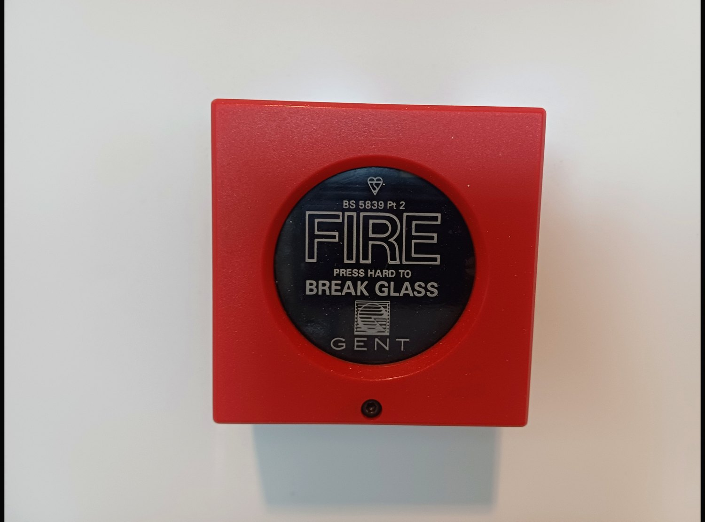

House Campaign
Philippians 4:4-9
Scripture in full
World English Bible
In case of sudden hurry
Stay With
What Is True

Break glass. Inside: one true sentence.
4Rejoice in the Lord always! Again I will say, “Rejoice!” 5Let your gentleness be known to all men. The Lord is at hand. 6In nothing be anxious, but in everything, by prayer and petition with thanksgiving, let your requests be made known to God. 7And the peace of God, which surpasses all understanding, will guard your hearts and your thoughts in Christ Jesus. 8Finally, brothers, whatever things are true, whatever things are honorable, whatever things are just, whatever things are pure, whatever things are lovely, whatever things are of good report; if there is any virtue, and if there is any praise, think about these things. 9The things which you learned, received, heard, and saw in me: do these things, and the God of peace will be with you.
A small safety note. If the room is not safe, leave. This page is about staying present, not staying trapped.